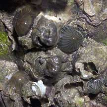
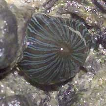
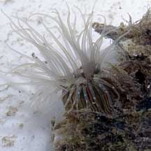
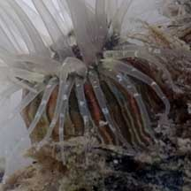
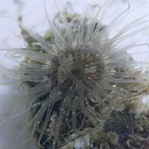
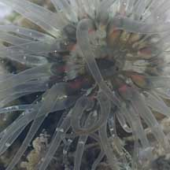

|
|
| sea anemones text index | photo index |
| Phylum Cnidaria > Class Anthozoa > Subclass Zoantharia/Hexacorallia > Order Actiniaria |
| Lined
bead anemone Diadumene lineata Family Diadumenidae updated Jul 2024 Where seen? This tiny anemone is often seen our Northern shores, on hard surfaces near the high water mark. Usually in clusters of many individuals rocky shores, jetty legs among encrusting animals like oysters, barnacles and even inside the shells of dead barnacles. Features: Tiny blobs less than 0.5cm. At low tide, they usually tuck their tentacles into their greyish body column and look like tiny blobs with fine stripes in white, orange, yellow or red. You will seldom see one with its tentacles expanded at low tide. This is considered one of the most widely distributed anemone in the world and was probably dispersed by ships. The anemone can reproduce by budding off from the base and by dividing into two. Status and threats: As at 2024, it is assessed not to be approaching the criteria for being listed among the threatened animals in Singapore. |
|
 Chek Jawa, Jul 07  |
 Punggol, Jun 11  |
 Punggol, Jun 11  |
*Species are difficult to positively identify without close examination.
On this website, they are grouped by external features for convenience of display.
| Lined bead anemones on Singapore shores |
On wildsingapore
flickr
|
| Other sightings on Singapore shores |
|
Links
References
|